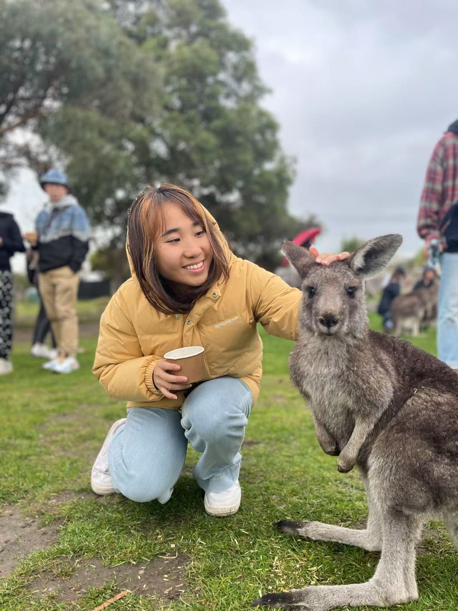

My Basic Info
Name: Yuqing(Brandy) Huang
LinkedIn: linkedin.com/in/yq-huang
Phone: (628) 444-9955
Email: byqhuang@ucdavis.edu
Address: San Francisco, CA
More About Me
Personal Description: Data enthusiast by day, coffee connoisseur by night. As an MS in Business Analytics candidate at UC Davis, I turn data into insights and numbers into strategies. With experience in hospitality, customer service, and consumer behavior, I help businesses understand what people really want (besides coffee). Skilled in statistical analysis and decision-making, I decode patterns and trends with a touch of humor. When I’m not analyzing data, I’m either experimenting with recipes, lost in a book, or crafting the perfect one-liner. If you need analytics with personality, I’m your person!
Education:
- Business Analytic, MS UC Davis
- Hotel Management, BA Macau University of Science and Technology
Experiences:
- Data Scientist(Project Manager) @Angel Flight West Practicum, US
- Operation Analyst @Galaxy Entertainment Group, Macau
- Research Assistant @Macau University of Science and Technology, Macau
My Projects
Here are some of my recent projects. Click below to view details.
Project 1
Project 2